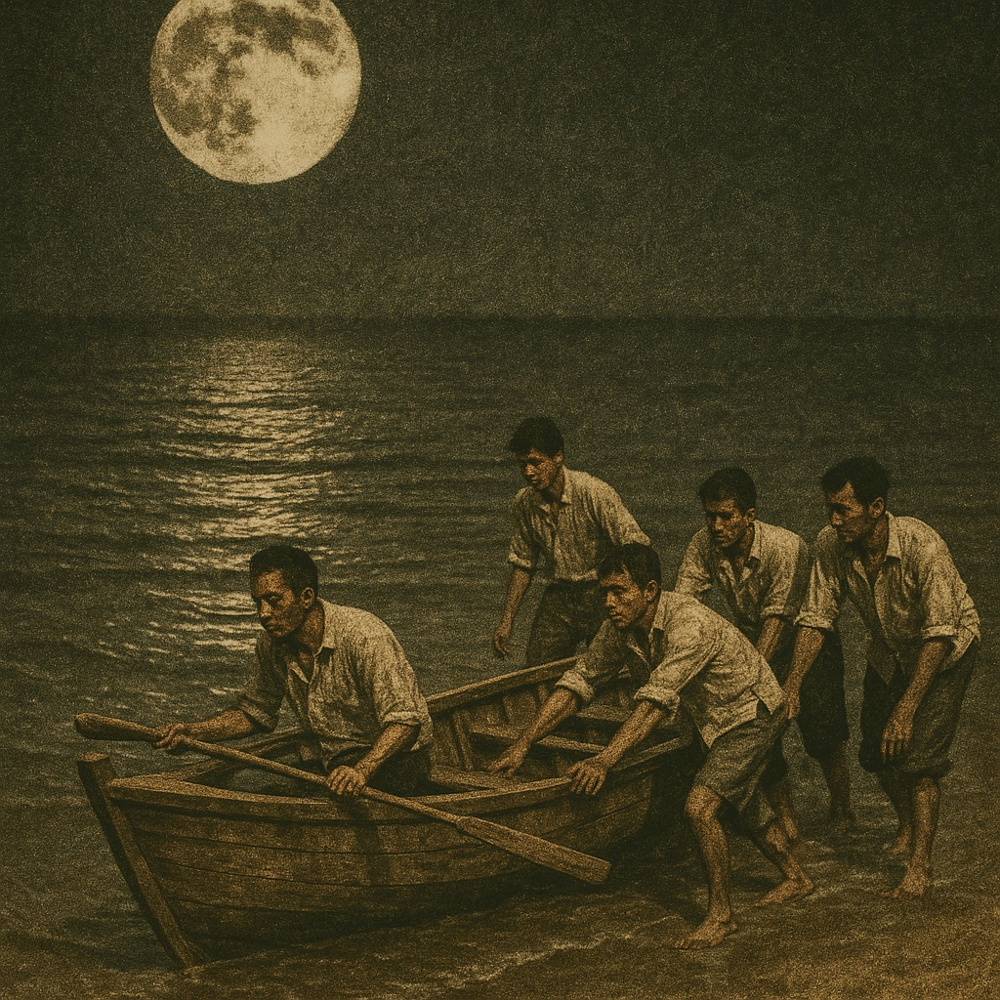

Tarutao Exile
Paradise Lost: The Prison Island
In 1939, So and his fellow political prisoners were transferred to the remote island of Tarutao, where the brutal beauty of paradise masked the harsh realities of their continued imprisonment.
The prows of two small steamers thrust through the dark rippling waters of Talo Udang Bay and laid anchor three hundred meters offshore at Tarutao island in southern Thailand. The tide was much too low for the Adang and the Rawi—converted Japanese fishing boats—to land on the beach. Seventy passengers, all prisoners, waded ashore in complete darkness, their belongings balanced precariously on their heads as they moved slowly through the waist-deep water.
Prisoner number 26, thin and weary yet somehow still in good spirits, was the last to disembark. As So Sethaputra moved carefully through the water, his main concern was the safety of the heavy cardboard box balanced on his head. Its contents represented years of work and the foundation of his future scholarly endeavors: twenty-two tins of State Express cigarettes, one tattered 1924 edition of the Concise Oxford Dictionary (minus cover), several English language classics, sixty exercise books, five pens and seventy-three nibs, six bottles of ink, three dozen pencils, and most precious of all, a partially completed manuscript in longhand.
The transfer from Bang Kwang prison (as described in ?@sec-rising-storm) had been undertaken with typical bureaucratic efficiency but little regard for human comfort. The prisoners had been given minimal notice of their departure, barely enough time to gather their few possessions and prepare for an uncertain future. For So, the move represented a catastrophic disruption to the dictionary project that had become his life’s work, but he was determined to continue his scholarly activities regardless of the obstacles that lay ahead.
A Paradise Transformed
Today, Tarutao is the headquarters of Southeast Asia’s largest marine park, a tropical paradise where forest-clad hills rise seven hundred meters above the intense blue Andaman Sea. Its jungles, wet with rain, stretch down to pristine beaches, while craggy limestone cliffs on the eastern side plunge dramatically into the ocean. Numerous streams and waterfalls cut through the mountainous interior, and a thick canopy of rainforest provides secure habitat for wild boar, long-tailed macaques, hornbills, and mouse deer. In the azure sea, dolphins, sea turtles, octopus, rays, and angelfish thrive undisturbed among some of the world’s most spectacular coral reefs.
In 1939, however, for the newly arrived political prisoners who had been transferred from Bangkok, Tarutao was grim and forbidding. They spent their first night shivering on the beach, huddled uncomfortably together in an open makeshift lean-to with just a flimsy palm thatch roof to protect them from wind and rain. Behind them, the jungle and its dark menacing forest were foreboding. The piercing screams of wild boars and the eerie shrills of macaws put fear into their hearts. The cold, wet monsoon wind slapped noisily against the palm thatch, keeping them awake for most of the night. By dawn, they were too weary to marvel at the first gentle rays of the rising sun streaking the eastern sky with shafts of pink and gold.
The prison camp at Talo Udang Bay, located at the southern end of the island, had been established as a penal colony for political prisoners in 1937. There was an existing prison camp for hardened criminals and murderers on the east coast at Talo Wao Bay. These two prison camps were separated by a twelve-kilometer track built by the common prisoners, and the two classes of prisoners were kept apart, although some of the less dangerous inmates were often called upon to work for the political prisoners.
Tarutao had been chosen for its distance from Bangkok—over 1,000 kilometers—and for its treacherous shark-infested waters. The southwest monsoon that battered the western shore from May to October and the northeast monsoon that hit the eastern side from November to April made travel to and from the mainland difficult and dangerous. Escape was not an option, or so the authorities believed.
The Moment of Decision
So Sethaputra had no intention of escaping, although escape had become the main topic of discussion among the political prisoners during their first weeks on the island. So had his own agenda: he had to finish his life’s work. The dictionary project that had consumed years of his imprisonment at Bang Kwang could not be abandoned simply because of a change of venue. If anything, the isolation of Tarutao might provide even better conditions for sustained scholarly work, once the immediate challenges of establishing a new routine could be overcome.
The dramatic change in living conditions forced immediate decisions about priorities and survival strategies. The prisoners quickly split into two distinct groups: those who wanted to escape to Langkawi island five kilometers south across the sea in Malaya, and those who were too old, too frightened, or not prepared to take additional risks. The division reflected not only practical assessments of escape possibilities but also fundamentally different approaches to their imprisonment and their responsibilities to family and scholarly commitments.
So had been part of an original escape committee formed at Bang Kwang, which included two of his former colleagues at the Daily Mail: Louis Kiriwat, the editor, and Naval Captain Phraya Saraphai, a contributor. They had invited many of their close friends from Ward Six to join their cause, including So’s closest friend and confidant, Prince Sithiporn, a man he respected highly. However, Prince Sithiporn had declined, asserting that at sixty he was too old and did not want to be a burden to the group.
After much soul-searching, So also decided not to join the escape group, even though he had been one of the early planners. His decision was influenced by multiple factors, each reflecting different aspects of his character and circumstances. The most immediate influence came from his mother, Gaysorn, who had communicated to him from Satun on the mainland where she was staying in order to be near her son. Her message was simple but compelling: “Don’t go.”
The Wisdom of Restraint
Gaysorn’s advice reflected her practical wisdom and deep understanding of both the risks involved in escape and the opportunities that might be lost if So abandoned his scholarly work. She was concerned for her son’s safety, recognizing that the dangers of escape extended far beyond the immediate risks of capture or drowning. Even if So successfully reached Malaya, he would become a political refugee with no means of support and no way to continue the dictionary project that had become his defining achievement.
More importantly, Gaysorn understood that a regular income from the dictionary was the most important priority for the family’s survival. So was the only breadwinner, supporting not only himself but also his younger brother and sister who were attending university. The revolutionary government’s destruction of his political career had eliminated the family’s primary source of income, making the dictionary earnings essential for their economic survival.
So also chose to stay in order to complete the unfinished dictionary. He felt a moral obligation to his publisher, Phraya Nibhon, and to the subscribers who had supported the project from its beginning. He understood that if his escape came to the attention of the authorities, the printing press would certainly be shut down. After all, how could the government tolerate a book written by a political fugitive being published, even if it was “just” a dictionary?
The commercial success of the early installments had provided So with several thousand baht in royalties, thanks to his loyal subscribers. He could never let them down by abandoning the project before its completion. The dictionary had become more than a personal scholarly achievement; it was a commitment to Thai education and culture that transcended his individual circumstances.
The Great Escape

On a full moon night, day twenty-nine of their stay on Tarutao, five prisoners decided to make their escape to Langkawi by boat, led by Captain Phraya Saraphai. The other four were Louis Kiriwat, So’s old colleague from the Daily Mail; Colonel Phraya Suraphan; Chalam Liamphetchrat, a lawyer who was also a keen astrologer and had selected the auspicious date for their escape; and Kuhn Asaniratakarn, a railway engineer.
It was a sad moment for So when they made their farewells on the beach. They had worked, laughed, and suffered together for so long that their separation felt like the breaking of family bonds. The men who were leaving represented some of the finest minds of their generation, individuals whose expertise and experience would be desperately needed for Thailand’s future development. Their departure diminished not only the prison community but also the kingdom’s intellectual resources.
So’s decision to remain was supported by Prince Sithiporn, who told him that the dictionary would be his gift to future generations. This perspective helped So understand his choice not as a failure of courage but as a commitment to cultural preservation that would outlast the political conflicts that had created their current circumstances. The dictionary project represented a form of resistance more enduring than political rebellion: the preservation and transmission of knowledge across generational and cultural boundaries.
The escape attempt itself was both audacious and carefully planned. The conspirators had studied the tides, weather patterns, and patrol schedules for weeks before making their attempt. They had constructed a makeshift boat from materials available on the island and had gathered supplies for the dangerous journey across open water. Their departure in the darkness of early morning was witnessed only by the few prisoners who had chosen to remain behind.
Building a New Community
Those who had made the decision to remain on the island responded with a conscious effort to rebuild their lives under the new circumstances. Over the next few weeks, they set about improving their living conditions by building new living quarters, decent kitchens, and clean latrines. Fortunately, fresh water was freely available from the many streams on the island, providing one essential resource that would not be a limiting factor in their survival efforts.
Prince Sithiporn put his heart and soul into working the land, making the earth more arable and eventually producing enough vegetables and fruit to keep everyone healthy. His agricultural expertise, gained from managing experimental farms before his imprisonment, proved invaluable in transforming Tarutao from a place of confinement into a productive community. The prince became the spiritual leader of the former inmates of Ward Six, continually boosting their morale and treating So like a son during this difficult period of adjustment.
The physical transformation of their living environment was accompanied by a psychological adjustment that required considerable time and effort. The prisoners had to adapt from the structured routine of Bang Kwang prison to the more flexible but also more demanding requirements of semi-self-sufficient living. They had to learn new skills, establish new social relationships, and find ways to maintain their intellectual activities under very different circumstances.
It was difficult for So to work on his dictionary under these trying conditions. He was missing the privileged status he had enjoyed at Bang Kwang, where his reputation as a teacher and scholar had provided both protection and resources for his work. He was also pining for Sompong, his newly wedded wife, whom he had married during one of the brief periods when political prisoners were allowed outside Bang Kwang for day visits.
The Resumption of Scholarly Work
Since So was not a religious person and did not believe in God, he did not seek holy guidance in prayer or spiritual meditation like many other prisoners. Instead, he took solace in his work, and through sheer determination and strength of character, he was soon able to return to his “Life’s Work.” The dictionary project provided him with the psychological anchor he needed to maintain his sanity and sense of purpose under the challenging conditions of island imprisonment.
He hired common prisoners to build a separate hut for his workplace and designed a new desk suitable for the different conditions on Tarutao. The construction of a dedicated workspace was essential for maintaining the discipline and focus required for dictionary compilation. The psychological importance of having a proper study environment cannot be overstated; it created a sense of scholarly normalcy that helped sustain his intellectual efforts despite the abnormal circumstances of his confinement.
So also took special care of his personal hygiene and appearance, never allowing himself to become demoralized by his circumstances. He was always well-groomed and made sure that even his threadbare clothes—white shirt and Chinese silk trousers—remained impeccable and well-laundered. His hair was always combed, and he arranged for one of the common prisoners to give him regular haircuts. He understood instinctively that maintaining his personal standards was essential for preserving his psychological resilience and his effectiveness as a scholar and leader.
By June 1940, So reached the letter “Z” in his alphabetical progression through the English language. The giant library edition dictionary was finished at last, running to 4,000 pages—1,600 more than originally conceived. The expansion reflected both the thoroughness of his approach and the additional insights he had gained through years of sustained work on the project. Now better organized and more mentally alert than ever, he could start work right away on a desk-sized dictionary, a smaller version designed specifically for high school students.
Life in Paradise
In time, So came to prefer life on Tarutao to Bang Kwang. The island was beautiful, the air was fresh and clean, and the surrounding nature was peaceful and quiet. Apart from the constant threat of malaria and other tropical diseases, So and his fellow prisoners led a relatively healthy life. The natural environment provided a therapeutic setting that was conducive to both physical and mental well-being, despite the restrictions of their imprisonment.
Morale improved significantly as the prisoners adapted to their new circumstances. Everyone chipped in to make prison life as pleasant as possible, creating a genuine community that was more cohesive and productive than what they had experienced at Bang Kwang. Prince Sithiporn, with the help of a group of common prisoners, produced enough vegetables and fruit for the island’s consumption, with surplus marketed at Satun on the mainland. He also baked bread and cakes in an oven sent from the mainland by his wife, providing luxuries that would have been impossible under normal prison conditions.
Not to be outdone, So started to manufacture soap, essential for someone as particular about personal hygiene as he was. He soon ran out of State Express cigarettes and started experimenting with different kinds of leaves, though this was not a huge success. Although So was not a gourmet, he enjoyed cooking and prepared shark fin soup for his friends. He liked mushrooms and created many new recipes, demonstrating the kind of creative adaptation that characterized the prisoners’ response to their unusual circumstances.
Other inmates joined in the communal spirit and contributed their individual skills, like weaving and basketry. Soon the prison’s production earned a significant income, and a small bank was opened to manage the community’s finances. Talo Udang prison was transformed into a self-sufficient commune that demonstrated the remarkable capacity of educated, motivated individuals to create productive communities even under the most challenging circumstances.
The biggest problem was the lack of adequate medicine, particularly quinine, as malaria was beginning to take its toll on the prison’s population. From the mainland in Satun, So’s mother managed to send over 1,000 quinine tablets, which saved many lives. Her continued support from the mainland provided not only practical assistance but also the emotional connection that helped sustain So’s morale during the long years of imprisonment.
As we shall see in ?@sec-war-comes-siam, the relative tranquility of life on Tarutao would be shattered by events far beyond the prisoners’ control. The global war that had been building throughout the late 1930s would finally reach Southeast Asia, bringing with it challenges that would test both the sustainability of the prison community and So’s ability to continue his scholarly work under even more difficult circumstances.